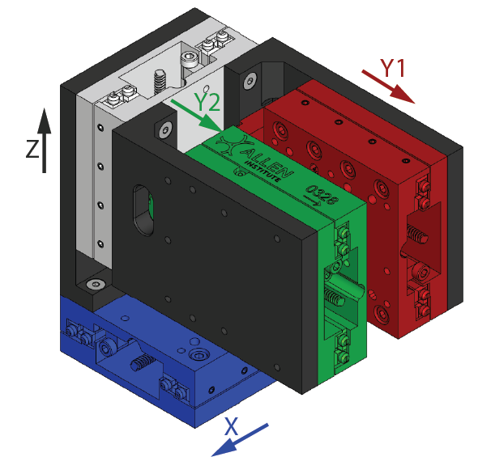

AIND Manipulator
Assembly instructions
The manipulator is composed of two main components:
- The physical manipulator composed of multiple axis that makes up a configuration (e.g. a 4 axis manipulator)
- A controller board that interfaces with the manipulator and the computer
Physical manipulator
The physical manipulator is expected to be assembled as per the following figure. The color of the axis is indicative of the color of the cable that should be connected to the corresponding port on the controller board.

| Motor | Axis | Cable Color |
|---|---|---|
| 0 | X (lateral) | Blue |
| 1 | Y1 (forward, "port", motor's left mouse's right) | Red |
| 2 | Y2 (forward, "starboard", motor's right mouse's left) | Green |
| 3 | Z (vertical) | White/Silver |
Each motor should also be wired to its respective cable following the color code below:
- Green (B+)
- Green-White (B-)
- Red (A+)
- Red-White (A-)
Finally, each end-of-travel switch follows the color code below:
- Blue (GND)
- White (Signal)
- Brown (+V)
Controller board
Bonsai Interface
To interface with the motors, the user can choose to use the Harp package for the Harp.StepperDriver. For simplicity, we maintain our own wrapper with core functionality and user-interface. The user can install it from the Aind Nuget feed.
The interface with the manipulator is handled by a single operator: AindManipulator. This operator is responsible for the following:
- Setting initial settings of the manipulator
- Implementing
StopMotors,HomeMotors,MoveToandMoveByoperations. - Implementing a front-end interface for the user to interact with the manipulator.
Load a configuration
The operator expects settings to be passed via a AindManipulatorCalibrationInput class. This class can defined using the respective schema in Aind.Behavior.Services repository. An example on how to generate a configuration file can be found here. The Json file can be passed to the operator using the following pattern:
Alternatively, an operator is provided for quickly defining the settings in the workflow directly. This can be done using the following pattern:
Front-end interface
The operator also provides a front-end interface for the user to interact with the manipulator. This can be accessed by double-clicking the AindManipulator while the workflow is running.
Controlling the manipulator
The easiest way to control the manipulator without using the user-interface is to directly interact with the StopMotors, HomeMotors, MoveTo and MoveBy subjects.
If the user wants to control the manipulator using the Harp interface, StepperMotorCommands and StepperMotorEvents can be used to send and receive commands and events respectively.